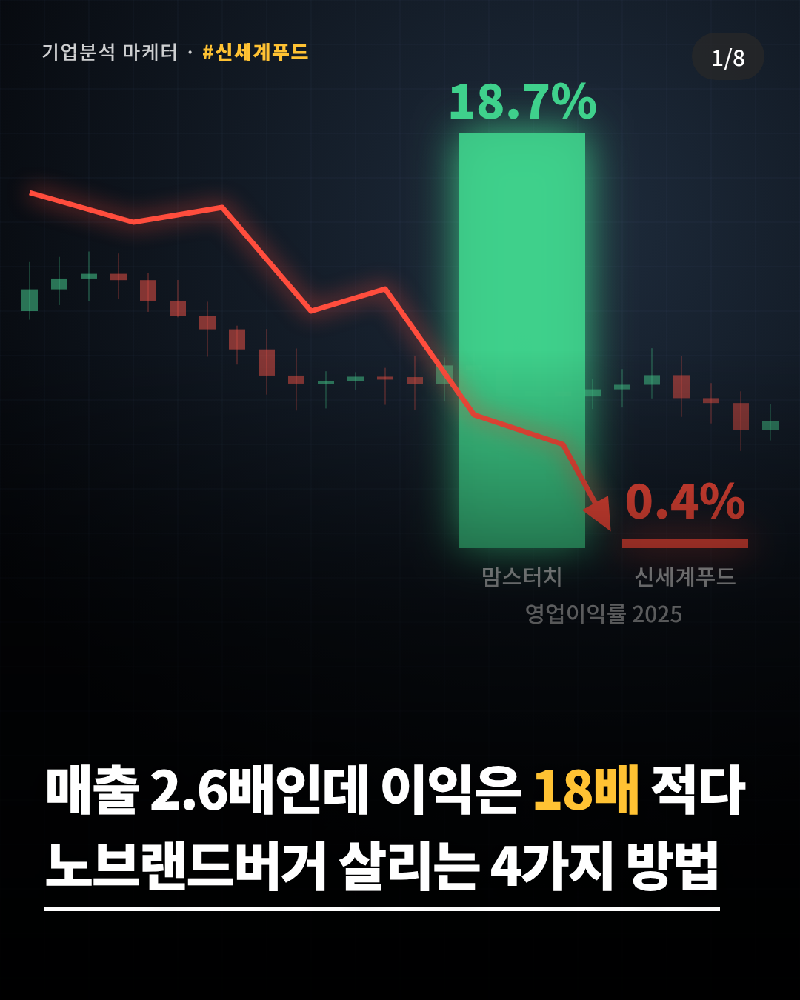
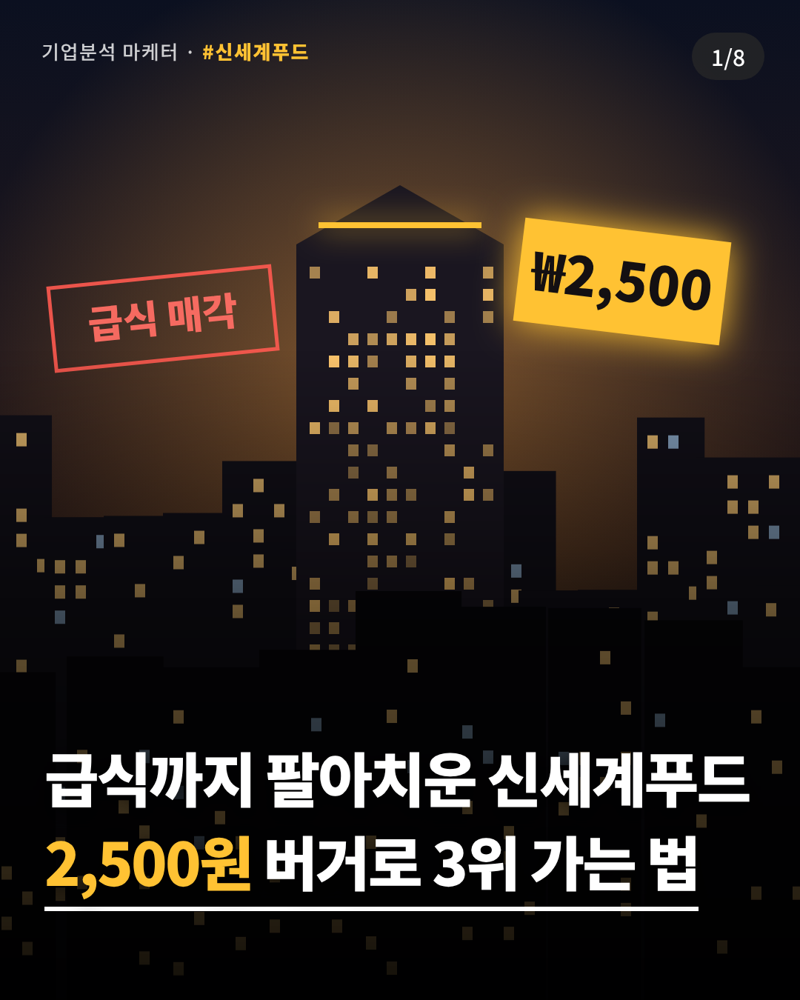
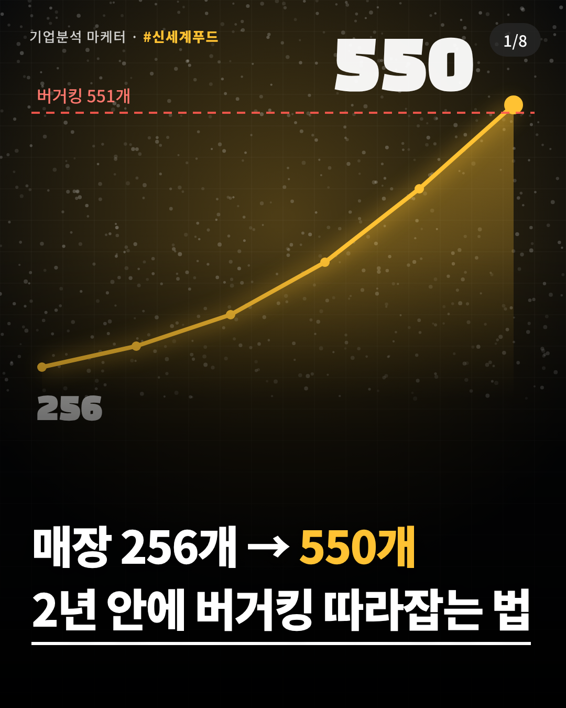

기업분석 마케터 · 외식기업 #2 · 신세계푸드 (노브랜드 버거)
결론부터
노브랜드 버거가 버거 3강에 들어가려면 '제일 싼 버거'에서 '점주가 제일 많이 남기는 버거'로 바뀌어야 한다. 가격은 이미 이겼고, 지금 지는 곳은 매장 수와 매장당 매출이다.
출처: 아시아투데이 2026.2.11(신세계푸드 공시), 한국경제 2026.4.2(맘스터치), 비즈니스워치 2026.3.11(매장 수). 영업이익률은 영업이익÷매출로 직접 계산.
참고 표지처럼 어두운 배경 위에 흰색 굵은 제목 2줄을 얹고, 둘째 줄에 밑줄을 그었습니다. 세 장 모두 1080×1350(인스타 4:5) 크기로 바로 올릴 수 있습니다. 첫 줄은 충격 숫자, 둘째 줄은 '해결 방법'을 약속해서 넘겨볼 이유를 만듭니다.

추천 · 숫자 역설형
배경: 영업이익률 18.7% 대 0.4% 막대와 추락하는 주가 차트. 숫자 하나로 멈추게 하는 안.

궁금증형
배경: 해 질 녘 기업 빌딩 실루엣, '급식 매각' 도장과 ₩2,500 가격표. 스토리 궁금증형.

성과 약속형
배경: 256개에서 버거킹 551개 선까지 치솟는 성장 곡선. 결과를 약속하는 안.
표지 공식: [놀라운 숫자 1개] + [구체적인 해결 약속]. 제목은 2줄, 한 줄에 14자 안쪽, 하단 1/3에 배치해야 피드 미리보기에서 잘리지 않습니다.
비교 대상은 매장 수 상위권이면서 성격이 뚜렷이 다른 세 곳입니다. 맘스터치는 가성비 가맹의 승자, 롯데리아는 토종 1세대, 버거킹은 프리미엄 직화입니다.
| 회사 (브랜드) | 2025 매출 | 2025 영업이익 | 이익률 | 국내 매장 | 대표 버거 가격 |
|---|---|---|---|---|---|
| 신세계푸드 (노브랜드 버거) | 1조 2,332억 | 48억 | 0.4% | 256 | 어메이징 불고기 2,500원 |
| 맘스터치앤컴퍼니 (맘스터치) | 4,790억 | 897억 | 18.7% | 약 1,490 | 싸이버거 (가격 미확인) |
| 롯데GRS (롯데리아 외) | 1조 1,190억 | 511억 | 4.6% | 약 1,300 | 2026.2 기준 인상 계획 없음 |
| 비케이알 (버거킹·팀홀튼) | 8,922억 | 429억 | 4.8% | 551 | 와퍼 7,400원 |
비교할 때 주의할 점이 있습니다. 신세계푸드 매출에는 베이커리·식품제조가 함께 들어 있고, 급식사업은 2025.12.1 매각돼 중단영업으로 빠졌습니다. 롯데GRS에는 엔제리너스, 비케이알에는 팀홀튼이 포함됩니다. 그래서 이익률은 '버거 브랜드'가 아니라 '운영 회사' 기준입니다.
매장 수: 비즈니스워치 2026.3.11(노브랜드 256, 버거킹 551, 롯데리아 약 1,300), 데일리안 2026.6.19(맘스터치 약 1,490). 실적: 각사 감사보고서·공시를 인용한 기사(출처 목록 참고).
핵심 차이는 가격이 아니라 '점주가 버는 돈'입니다. 맘스터치는 치킨·피자를 얹어 매장당 매출을 키웠고, 롯데리아는 리뉴얼과 로봇으로 평당 매출을 올렸습니다. 노브랜드는 가장 싸게 팔지만 평당 매출이 가장 낮아서, 가격 우위가 아직 점주 수익으로 이어지지 못한 상태입니다.
가맹 브랜드는 버거를 먹는 사람과 가게를 여는 사람, 두 고객을 동시에 설득해야 합니다. 노브랜드의 경쟁력은 두 번째 고객에서 결정됩니다.
"둘이 만 원, 창업은 1억 아래."
소비자 가격 앵커와 창업 비용 앵커를 한 문장에 묶어 두 고객에게 동시에 기억시키는 구조입니다.
문제는 하나로 모입니다. 싸게 팔지만 매장당 매출이 낮아서 점주가 덜 벌고, 그래서 매장이 느리게 늘어납니다. 아래 네 가지는 각각 무엇을, 어떻게, 언제, 몇까지 할지 정했습니다.
미끼는 그대로 둡니다. 2,500원 어메이징 불고기는 고정 가격으로 유지하고, 계산대와 키오스크 첫 화면에 '+1,500원 치킨 2조각 or 감자·음료' 업셀 버튼을 붙입니다.
근거: 맘스터치 치킨 매출 비중 10% → 21.1%. 버거킹도 저가 '올데이스낵'으로 같은 길.
목표 · 사이드 부착률 30% → 객단가 약 +7% (가정: 기존 객단가 6,000원, 30% × 1,500원 = +450원)
신세계푸드 공동구매·자체 제조로 아낀 원가의 절반을 패티·번 공급가 인하로 돌립니다. 가맹 설명회에서 '매장 1곳 월 손익표'를 공개해 예비 점주의 불안을 숫자로 없앱니다.
근거: 맘스터치는 가맹점 평균매출을 4.3억(2020) → 5.4억(2024)으로 키운 뒤 월 1억 매장이 149곳이 됐습니다. 점주가 벌면 다점포가 생깁니다(노브랜드 다점포 1인 평균 2.6개).
목표 · 다점포 매장 42개 → 100개, 점주 원가율 2%p 개선
그룹 상권 안 10평 키오스크형 매장을 표준화하고, 그룹 부동산에 우선 입점권을 줍니다. 임대료는 낮추고 쇼핑객 집객은 그대로 가져옵니다.
근거: 복합시설 매장 1년 새 2배(20개점). 맘스터치 피자 숍인숍 매장은 전환 후 매출 평균 +34%.
목표 · 복합시설 매장 20 → 60개 (시범 5곳, 3개월 매출 비교 후 확대)
신세계 그룹 멤버십·앱과 연동한 점심 구독(평일 11~14시 세트 1,000원 할인, 월 12회)을 만듭니다. 반짝 할인 대신 방문 습관을 삽니다.
근거: 최대 42% 할인 행사는 일회성. 롯데리아 런치세트 수요 +15% 사례처럼 점심 수요가 커지고 있습니다.
목표 · 점심 매출 비중 +5%p, 구독자 월 재방문 8회 이상
사이드 세트 출시, 숍인숍 시범 5곳, 점주 손익표 공개
공급가 인하 적용, 런치패스 출시, 콤팩트 월 10개 출점 유지
숍인숍 60곳 확대, 다점포 100개, 지방·제주 거점 직영 7곳 운영
'월 두 자릿수 출점'이라는 회사 설명을 월 10개 순증으로 단순화하면, 2028년 말 530개 안팎으로 현재 버거킹 매장 수에 근접합니다. 회사 목표인 '2030년 3위권'과 맞물리는 경로입니다. 여기에 전략 1~3으로 평당 매출을 6% 올리면 점주 수익이 개선돼 다점포 확산이 빨라지고, 순증 속도도 더 높아질 수 있습니다.
이 그래프는 예측이 아니라 가정에 따른 계산입니다. 2026.10 값은 2026.7 다점포 기사(전체의 약 1/7이 42개)로 역산한 약 290개와 맞춰 본 추정치입니다. 폐점, 경쟁사 출점은 반영하지 않았습니다.
처음 6초에 결론과 충격 숫자를 다 보여주고, "어떻게 이 결론이 나왔는지 보여줄게"로 과정을 되감는 구조입니다. 결말을 먼저 알면 시청자는 '왜?'가 궁금해서 남습니다.
매출 2.6배 큰데
이익은 18배 적다
표지 1안 그대로 첫 프레임
"신세계푸드는 맘스터치보다 매출이 2.6배 큰데, 이익은 18배 적습니다."
연출: 표지와 같은 어두운 사진 + 흰 글자 2줄, 효과음 '탁'
이기려면
'제일 싼 버거'를
버려야 한다
"제 결론은 이겁니다. 노브랜드는 싼 버거를 버려야 이깁니다."
연출: '싼 버거'에 빨간 취소선 애니메이션
매출 1.2조 vs 4,790억
영업이익은 몇 배 차이?
3초 안에 맞혀보세요
"매출은 신세계푸드가 2.6배 큰데, 영업이익은 몇 배 차이일까요?"
연출: 3·2·1 카운트다운, 시청 유지용
48억 vs 897억
18배, 맘스터치 승
이익률 0.4% vs 18.7%
"정답은 18배. 작은 회사가 18배 더 법니다. 왜 그럴까요?"
연출: 숫자 카운트업, 출처 자막 '각사 공시'
자료수집
버거 4강 매장 수
1,490 · 1,300 · 551 · 256
"거꾸로 따라가 볼게요. 매장 수부터 보면 노브랜드는 맘스터치의 6분의 1."
연출: 가로 막대 4개가 차례로 자라남
같은 버거
다른 무기
맘터=치킨·피자 / 롯데=리뉴얼 / 버거킹=와퍼 / 노브랜드=가격
"다들 무기가 있는데, 노브랜드의 무기는 가격 하나뿐이에요."
연출: 4분할 화면, 로고 대신 메뉴 사진
SWOT
강점 원가 · 약점 평당 매출
평당 1,699만원, 비교 대상 중 꼴찌
"원가는 제일 싸게 만드는데, 평당 매출은 꼴찌. 점주가 못 버는 구조예요."
연출: SWOT 4칸 중 S·W만 확대
STP
고객은 두 명
먹는 사람 + 가게 여는 사람
"가맹 브랜드의 진짜 고객은 둘입니다. 버거 먹는 사람, 그리고 가게 여는 사람."
연출: 사람 아이콘 2개가 갈라지는 화면
① +1,500원 사이드 세트
② 원가 절감→점주 공급가
③ 이마트 숍인숍 60곳
④ 월 9,900원 런치패스
목표: 평당 매출 1,699만 → 1,800만원
"해결책은 네 가지. 2,500원은 지키고, 사이드로 더 팔고, 점주 원가를 낮추고, 이마트 안으로 들어가고, 점심 단골을 구독으로 묶는 겁니다."
연출: 한 줄씩 빠르게 등장, 0.8초 간격
2028년
버거킹 옆자리
당신이 점주라면, 어디 차릴래요? 댓글로
"이대로 가면 2028년엔 버거킹 매장 수 옆까지. 여러분이 점주라면 어디 차리실래요?"
연출: 노란 배경 전환, '팔로우하면 다음 기업' 자막
매출 1조 2,332억, 영업이익률 0.4%. 신세계푸드가 급식까지 팔고 노브랜드 버거에 건 이유를 분석했어요. 결론: 가격은 이미 이겼다. 이제 '점주가 더 버는 버거'가 돼야 한다. 📊 자료수집 → SWOT → STP → 전략 → 예상결과 경쟁사: 맘스터치 · 롯데리아 · 버거킹 여러분이 점주라면 어디에 차리시겠어요? 댓글로 알려주세요. 다음에 분석할 외식기업도 추천 받아요. ※ 수치 출처: 각사 공시 인용 기사, 공정위 정보공개서 #기업분석 #마케팅포트폴리오 #신세계푸드 #노브랜드버거 #맘스터치 #롯데리아 #버거킹 #SWOT #STP #외식경영 #카드뉴스
업로드 전에 DART 전자공시(dart.fss.or.kr)와 공정위 가맹사업거래(franchise.ftc.go.kr)에서 핵심 숫자 3개(신세계푸드 매출·영업이익, 맘스터치 영업이익, 노브랜드 정보공개서 평균매출)를 한 번 더 확인하길 권합니다. 노브랜드 버거의 가맹점 평균매출은 이번 조사에서 공개 기사로 확인하지 못했습니다.